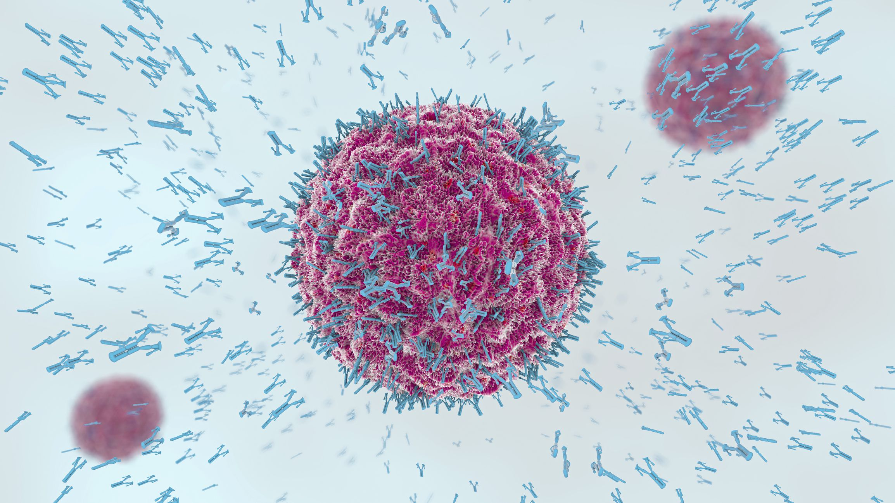
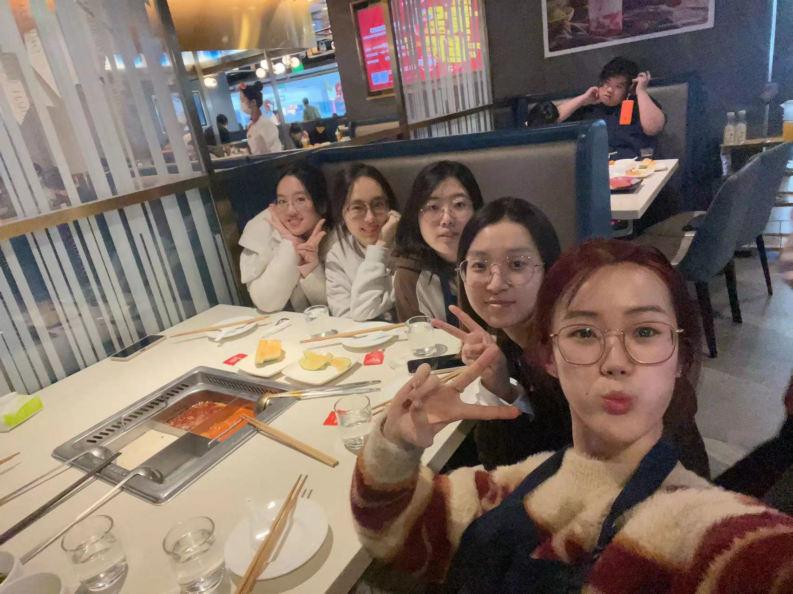

Dr. Chen Yuezhou was jointly trained by Peking University and Beijing Institute of Life Sciences. She received her PhD in Cell Biology in 2009 and her MD in 2014 from the China Academy of Chinese Medical Sciences. She then conducted postdoctoral research at Harvard Medical School & Brigham and Women's Hospital, and was promoted to lecturer at Harvard Medical School in 2020. From November 2022, he will serve as a researcher at the School of Life Sciences of Peking University and the Peking University-Tsinghua University Joint Center for Life Sciences.
In infectious diseases or vaccination, how does the body form long-lasting and broad-spectrum antibodies to respond to evolving pathogens? How are pathogenic autoantibodies formed in autoimmune diseases? Whether and how modifiable environmental factors (such as commensal microorganisms) influence B cell differentiation and antibody production? Focusing on these issues, our laboratory focuses on B cell-mediated immunology and conducts research based on mouse models and human longitudinal cohorts, combining molecular biology, biochemistry, in vivo imaging, cell lineage tracing and bioinformatics.


chenlab celebrates the arrival of the New Year in Haidilao.
Dr. Chen Yuezhou's recent work (first author) has been published in high-level journals such as Cell, Science Immunology, JEM, etc. Now recruiting 1-2 outstanding postdoctoral fellows.